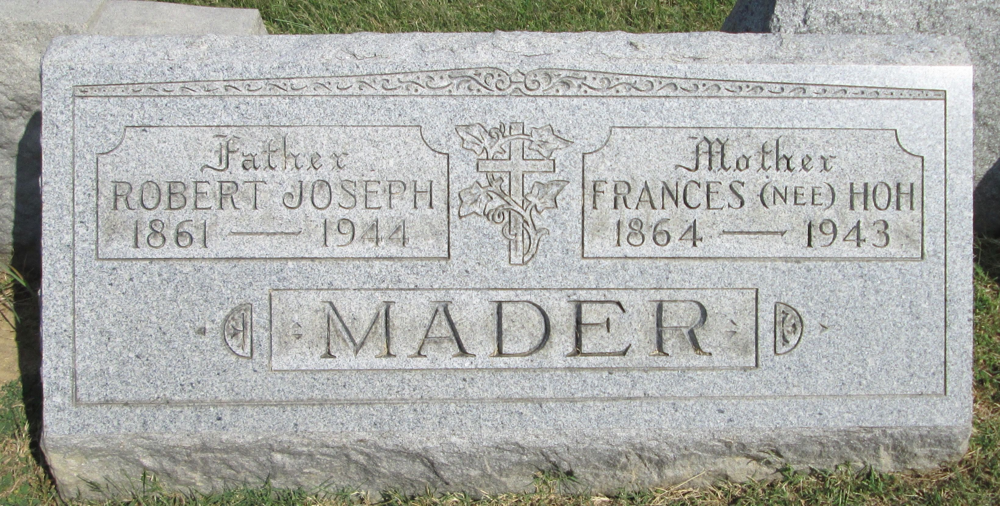
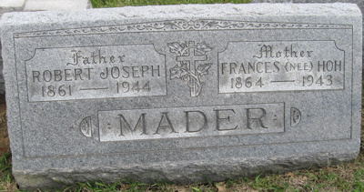

Robert Joseph Mader
29 April 1861 – 1 January 1944

Quick Facts
Immediate Family
Parents
- Felix Bernard Mader (1834–1912; Find a Grave-linked parent)
- Elizabeth Enzweiler Mader (1838–1907; Find a Grave-linked parent)
Spouses
- Frances Hoh Mader (1864–1943)
Children
- Marie / Maria Katharine Mader (born 1894; memorial as Marie, baptism transcription as Maria Katharine)
- Michael Franz Mader (1897–1972)
- Cyrus Johan Mader (born 10 Jun 1900; parish baptism transcription)
- Anne / Anna Elisabeth Mader Hess (1903–1990)
- Lawrence Joseph Mader (born 18 Sep 1906; parish baptism transcription)
Siblings
- Maria Anna Mader (1860–1885)
- Josephine Mader Blesch (1863–1895)
- Elizabeth “Lizzie” Mader Breitenstein (1865–1952)
- Katherine Mader (1868–1956)
- Frances Maria “Fanny” Mader (1869–1894)
- Rosa Matilda Mader (1871–1877)
- Regina Agatha “Aggie” Mader Kreidler (1874–1956)
- Grace Fannie Mader Mack (1877–1938)
Family Relationship Notes
On Family Tree Sites
Person Archive
Life Timeline
1861
Birth reported 29 April in Campbell County, Kentucky.
1894–1906
At least five children appear in memorial links and St Francis baptism transcriptions.
1944
Died 1 January in Dayton, Campbell County, Kentucky; buried 4 January at St Stephen Cemetery.
Life Story
Robert Joseph Mader was a Campbell County, Kentucky native who died in Dayton in 1944. The memorial transcription includes funeral-home information naming his parents Felix B. and Elizabeth Mader, wife Frances Hoh, and burial date. His shared headstone with Frances is photographed in their Find a Grave memorials.
The memorial links eight siblings. St Francis baptism transcriptions name at least five children of Robert and Frances, including Cyrus and Lawrence not shown in the memorial child list. The original parish register should be checked before treating the child roster as complete.
Photo Gallery


Sources and Evidence
- Find a Grave memorial 26986793: dates, burial, parents, spouse, siblings and children; derivative memorial and funeral-home extract.
- Frances Hoh Mader memorial 22796455: spouse and child links.
- St Francis baptisms, 1893–1896; 1897–1901; 1902–1906. Derivative transcriptions.
Research Notes and Open Questions
- Original birth, marriage, death and census records not inspected; parent and sibling links in the memorial are contributor-maintained.
- Parish baptisms are secondary transcriptions; seek register images for all listed children.
- Find a Grave gives death date 1 Jan 1944 and burial Jan 4; funeral home extract identifies parents Felix B. and Elizabeth.
- No individual portrait located; shared stone is the only verified visual, and it is labeled as a headstone.
DNA
No DNA evidence reviewed for this profile.
Family Notes
Research notes, full citations, and downloaded records are in this person’s GitHub research-notes archive.
Research notes: Robert’s GitHub archive.
Profile created 24 November 2026; sibling and child lists are attributed to derivative memorials and parish transcriptions.